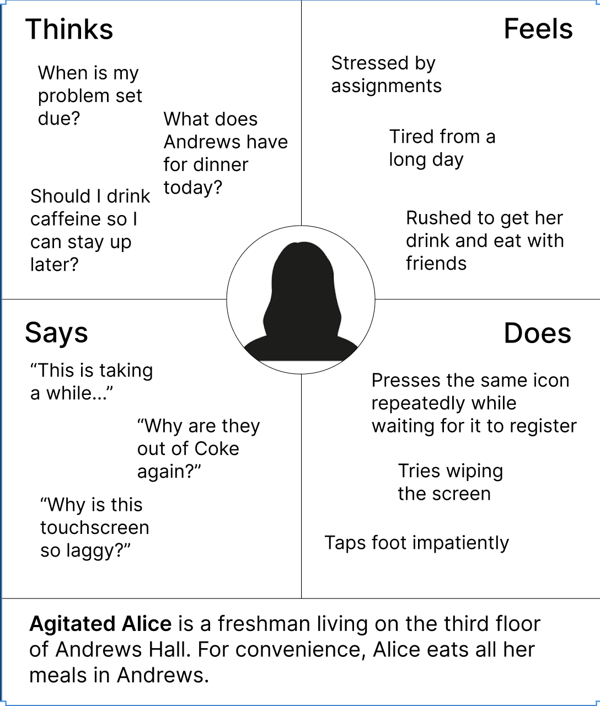
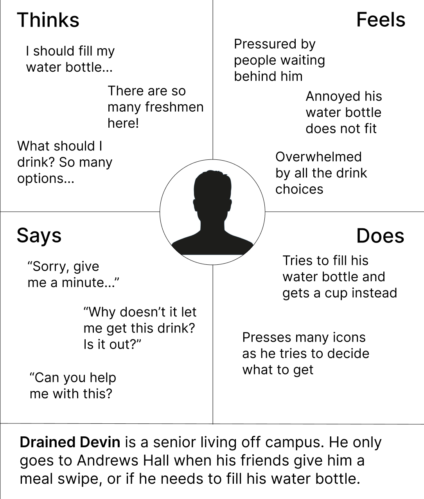
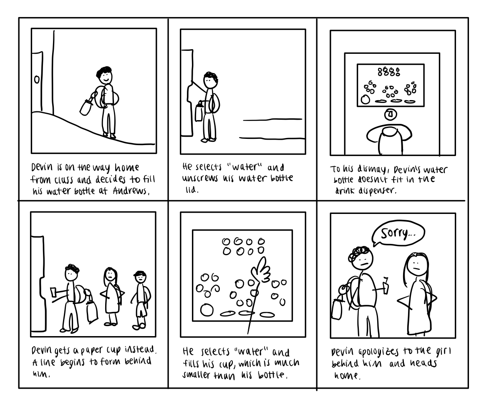

User Storyboarding

Timeline: March 2025
Skills: Figma
Overview
As users interact with interfaces in everyday life, how can their needs
and experiences be illustrated?
I explored real Brown University students' interactions with a dining hall fountain
drink machine before demonstrating their end‑to‑end experiences through
personas and storyboarding.
Product Research
The interface I researched is a fountain drink machine located in Brown University's Andrews Dining Hall.
User Research
From observing students using the machine, most users seemed familiar
with the touchscreen and found their drink selections easily.
Some users had difficulty navigating the touchscreen if their drink was
out and spent longer doing so.
Users who tried to fill their water bottles sometimes had a harder time
doing so.
I interviewed 3 students about their experience:
1. How many times a week do you use the drink machine?
1, 3, 14
2. What are things you like, if any, when using the drink machine?
Water selection is easy to find
Touchscreen is a familiar interface
Dispense button is intuitive
3. What are frustrations, if any, that you have while using the drink machine?
Flavor options are hard to find
Can't tell when a subflavor is out
Hard to fill my water bottle
4. Overall, how satisfied are you when using the drink machine? (not at all, a little, somewhat, very)
A little, somewhat, somewhat
Personas
From my user research, I constructed 2 archetypal personas and their empathy maps using Figma. Agitated Alice and Drained Devin represent trends I observed across all the users I interviewed.
 Storyboard
My final storyboard depicts Drained Devin's end‑to‑end user experience with the fountain drink machine.
Final Thoughts
Through my user and interface research, I was able to better understand
the needs and experiences that are important for designers to consider.
Interestingly enough, on the day I finished this project, Andrews Hall
installed a new drink machine with a larger dispenser and a more
responsive touchscreen.